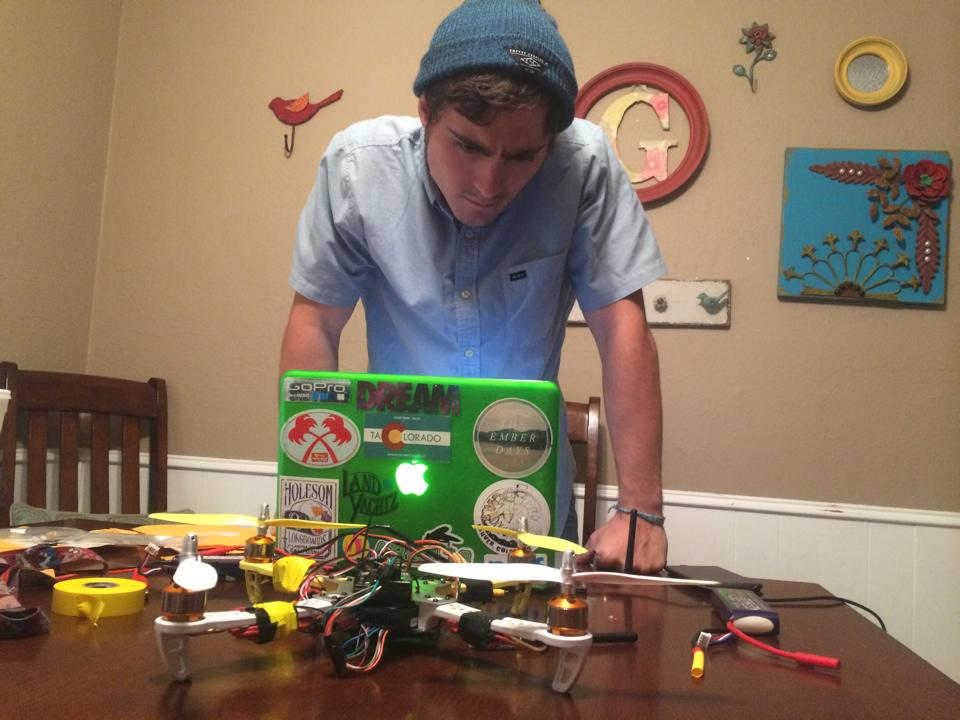

Research

The titles of Washed Out's breakthrough song and the first single from Paracosm share the
two most important words in Ernest Greene's musical language: feel it. It's a simple request, as well...
I'm serious as a heart attack
Your bones don't break, mine do. That's clear. Your cells react to bacteria and viruses differently than mine. You don't get sick, I do. That's also clear. But for some reason, you and I react the exact same way to water. We swallow it too fast, we choke. We get some in our lungs, we drown. However unreal it may seem, we are connected, you and I. We're on the same curve, just on opposite ends.
We happy?
You think water moves fast? You should see ice. It moves like it has a mind. Like it knows it killed the world once and got a taste for murder. After the avalanche, it took us a week to climb out. Now, I don't know exactly when we turned on each other, but I know that seven of us survived the slide... and only five made it out. Now we took an oath, that I'm breaking now. We said we'd say it was the snow that killed the other two, but it wasn't. Nature is lethal but it doesn't hold a candle to man. \
I can do that
Now that we know who you are, I know who I am. I'm not a mistake! It all makes sense! In a comic, you know how you can tell who the arch-villain's going to be? He's the exact opposite of the hero. And most times they're friends, like you and me! I should've known way back when... You know why, David? Because of the kids. They called me Mr Glass.
I'm serious as a heart attack
Well, the way they make shows is, they make one show. That show's called a pilot. Then they show that show to the people who make shows, and on the strength of that one show they decide if they're going to make more shows. Some pilots get picked and become television programs. Some don't, become nothing. She starred in one of the ones that became nothing.
Hold on to your butts
Well, the way they make shows is, they make one show. That show's called a pilot. Then they show that show to the people who make shows, and on the strength of that one show they decide if they're going to make more shows. Some pilots get picked and become television programs. Some don't, become nothing. She starred in one of the ones that became nothing.